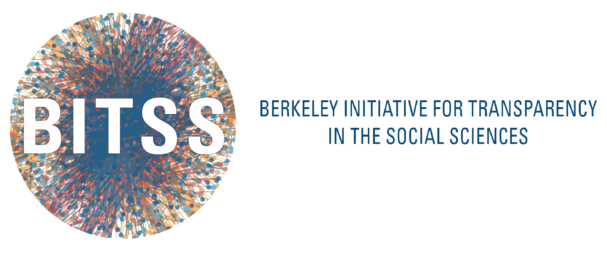

Proyecto de la Universidad Católica de Córdoba, con el apoyo de la Iniciativa de Transparencia en Ciencias Sociales de la Universidad de Berkeley. Tiene como objetivo promover marcos de referencia en materia de ética institucional y transparencia.